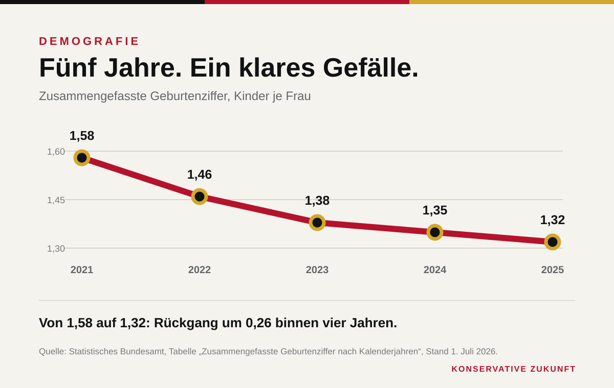

654.241 Kinder wurden 2025 in Deutschland geboren. So wenige waren es in keinem Jahr der Nachkriegszeit. Die zusammengefasste Geburtenziffer sank nach endgültigen Angaben des Statistischen Bundesamtes auf 1,32 Kinder je Frau. Im Vorjahr waren es 1,35. Seit 2022 geht die Zahl kontinuierlich zurück.
Die nüchterne Statistik trifft auf ein politisches Ritual. Nach jeder neuen Zahl versichert die Regierung, wie viel Geld bereits in Familien fließe. Im Bundestag verwies die Union im Mai auf weit über 100 Milliarden Euro, die Bund, Länder und Kommunen jährlich mobilisierten. Der Hinweis soll die Debatte beenden. Tatsächlich eröffnet er sie: Wenn die Ausgaben hoch und die Ergebnisse schwach sind, muss über Wirkung gesprochen werden.

Der Befund ist breiter als ein Milieu
Die Geburtenziffer sank 2025 sowohl bei deutschen als auch bei ausländischen Frauen um rund drei Prozent. Bei deutschen Frauen lag sie bei 1,20, bei ausländischen Frauen bei 1,78. Zwischen den Ländern reichte die Spanne von 1,16 in Sachsen bis 1,38 in Niedersachsen. Der Rückgang ist weder mit einem einzigen Rollenbild noch mit einer einzelnen wirtschaftlichen Kennzahl erklärt.
Gerade diese Breite macht einfache Schuldzuweisungen unbrauchbar. Der Rückgang betrifft unterschiedliche Regionen, Staatsangehörigkeiten und Lebensentwürfe.
Er hat materielle Ursachen: Wohnkosten, unsichere Erwerbsbiografien, fehlende Betreuung und die Sorge vor dauerhaftem Wohlstandsverlust. Er hat auch eine kulturelle Seite. Eine Gesellschaft, die Bindung vor allem als Risiko beschreibt, darf sich über Bindungsscheu nicht wundern. Familienpolitik besteht deshalb nicht aus einer Prämie. Sie besteht aus Verlässlichkeit und gesellschaftlicher Anerkennung.
Krahs richtiger Alarm und seine offene Rechnung
Maximilian Krah sagte am 7. Mai im Bundestag, die Fertilitätsrate könne bis zum Ende des Jahrzehnts auf ein Kind je Frau fallen. Er verband den Geburtenrückgang zu Recht mit der Zukunft umlagefinanzierter Sozialsysteme und ganzer Regionen. Dieser Zusammenhang ist der prüfbare Kern seiner Wortmeldung. Wer weniger nachwachsende Beitragszahler hat, kann Renten, Pflege und Infrastruktur nicht auf Dauer unverändert finanzieren.
Die konkrete Prognose von einem Kind je Frau belegt das aktuelle Destatis-Material jedoch nicht. Die amtliche Statistik weist 1,32 aus und beschreibt einen anhaltenden Rückgang. Sie veröffentlicht keine entsprechende Vorhersage für 2030. Eine konservative Zeitung verliert nichts, wenn sie diese Grenze benennt. Im Gegenteil: Der belegte Befund ist ernst genug. Er braucht keine ungesicherte Zuspitzung.
Der Staat hat Grenzen – und Pflichten
Kinder sind kein staatliches Produktionsziel. Der Einwand der Union gegen demografische Planwirtschaft ist richtig. Daraus folgt aber keine politische Unzuständigkeit. Der Staat setzt Steuern, Wohnungsrecht, Betreuung, Bildung und Sozialbeiträge. Er prägt damit die Bedingungen, unter denen Paare eine Familie gründen.
Eine konservative Antwort stärkt Wahlfreiheit. Sie entlastet Eltern im Steuerrecht, schützt unterschiedliche Formen der Arbeitsteilung und sorgt für Schulen, Wohnungen und Betreuung, auf die man sich verlassen kann. Sie spricht außerdem aus, was in vielen Regierungspapieren fehlt: Kinder sind nicht bloß ein Kostenfaktor oder ein privates Freizeitprojekt. Sie sind Zukunft.
Deutschland kann noch Jahrzehnte von vorhandener Infrastruktur, Kapital und den geburtenstarken Jahrgängen leben. Das ist Leben von der Substanz. Jede neue Geburtenzahl zeigt, wie schnell sie schwindet. 1,32 ist kein Grund für Panik. Es ist ein Grund, die bequemen Antworten zu beenden.
Quellen
- Statistisches Bundesamt: Geburtenziffer 2025 bei 1,32 Kindern je Frau, 1. Juli 2026.
- Deutscher Bundestag: Plenarprotokoll 21/77, Seiten 51–60, 7. Mai 2026.